角色介绍
|
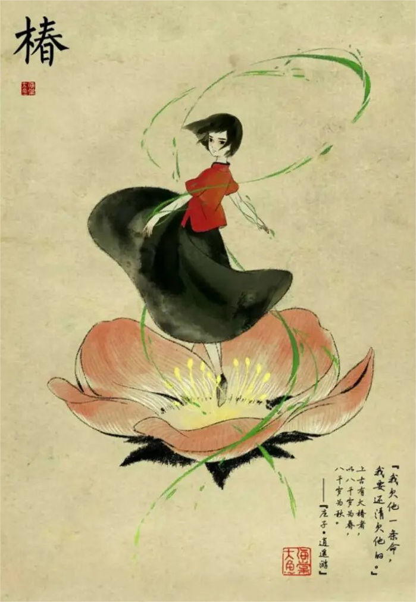
居住在“神之围楼”里的少女，性格坚强执着，外表有些冷漠严肃，但是内心非常细腻。 椿掌管着海棠花的生长，母亲凤期望她能像自己一样独当一面。她对人类世界充满好奇， 为了报恩，以一半寿命为代价让男孩鲲复活。最后在湫的帮助下和鲲一起来到人世间。 |
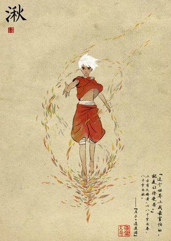
掌管秋风的少年，椿的青梅竹马，自幼没有父母，由奶奶抚养长大。为一代天神， 掌管秋风和水元素。虽然年龄较小，但却拥有着开天的法力。为了帮助椿去人间， 不顾奶奶的反对，用面具和神杖开天。他从小缺少管束，天不怕地不怕，可在内心深处， 却最害怕让他所爱的人受苦。后来和灵婆交易用自己的命换回了椿的性命并送椿和鲲去了人间。 |
|
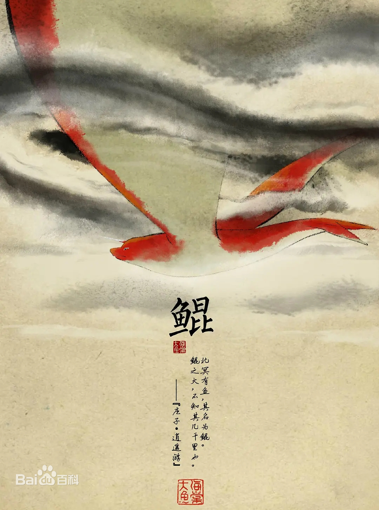
原本是人类男孩，身世不明。为了去救化为海豚的椿牺牲了自己的生命，灵魂变成一条鱼， 从袖珍小鱼一直成长为北溟巨兽“鲲”，在特定的时间还能原成人形。后来和椿在人间重逢。 |
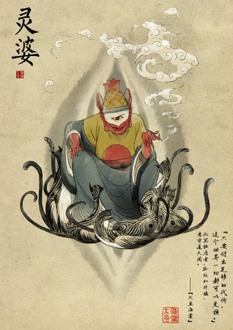
灵婆掌管所有死去人类灵魂，住在北冥的如升楼里，与猫为伴，看守藏有人类灵魂的通天阁。椿为了使鲲死而复生，用一半的寿命从灵婆那里换取了鲲的灵魂。湫为了救椿，用自己的所有寿命换取椿的另一半寿命，最后湫成了灵婆的继任者。 |
|
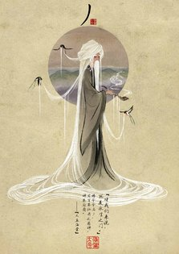
椿的爷爷，药师，医术高明，掌管百草，神农后裔，一生救 人无数却救不了自己最爱的人。后来化身为巨木。片中最后 为救中双头蛇毒的湫而牺牲自己。 |
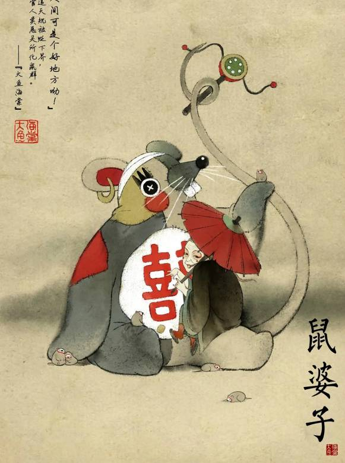
神秘又丑陋的老婆子，掌管见不得人的动物，玩 世不恭，成天和老鼠呆在一起，喜欢调戏帅哥。鼠婆子因违天规被贬下界，掌管人类恶灵所化鼠群，住在地下粪池旁，终日生活在黑暗中，无法与阳光接触，但渴望回到人间，曾说过“人间可是个好地方”。后来因为得到椿从人间带来的信物（鲲的海豚状的埙），而在湫打开海天之门后，变回年轻的样子，并趁机回到人间。 |
|
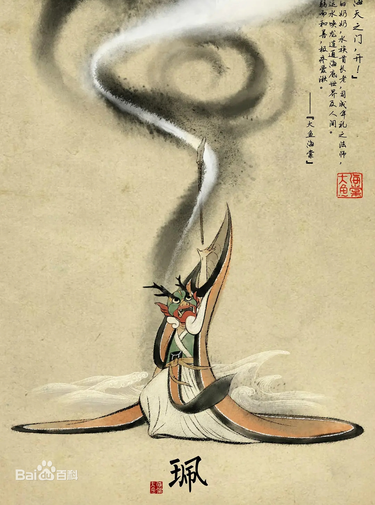
湫的奶奶，身体不是很好，体弱和善，疼爱湫。水族首长老，掌管水，能够召唤出黑龙将天空撕开一道裂缝， 连通人类世界和“其他人”世界。成人礼的主持者，在成人礼时戴着龙头面具、运用法器打开海天之门。 |
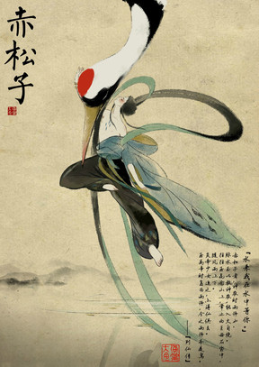
又名赤诵子,号左圣。是汉族上古神话中的仙人。相传为神农时雨师,既可以在火种焚烧毫发无损, 又能随着风雨在空中玩乐。既是汉族神话传说中的人物，也是前承炎黄，后启尧舜，奠定华夏万世基业的中华帝师。 同时他也是炎帝小女儿的师父。 |
|
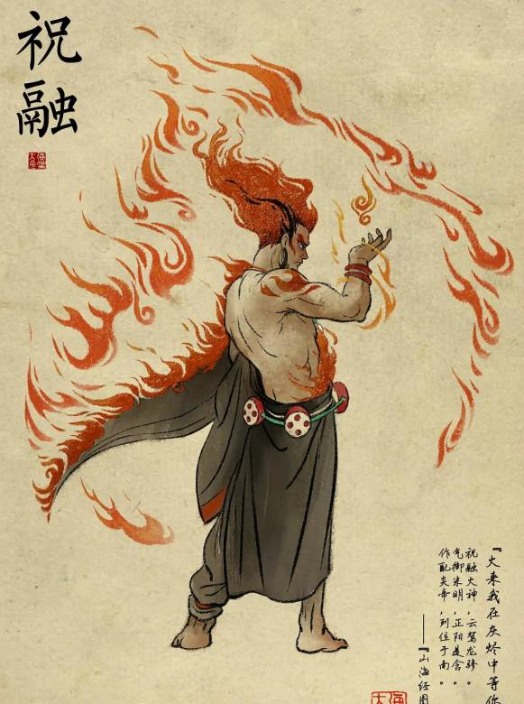
海底世界的人物，可控火，为人虽暴躁，但是特别关心朋友，曾经狠心攻击鲲，后来为了救人把自己的 力量分给了伙伴赤松子。是一个重情谊的人。 |
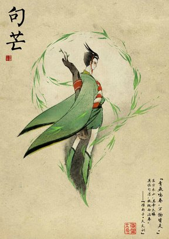
掌管民间农业和春季树木发芽的春神， 它在古代的民间是一个十分重要的神 灵，每年百姓在春天要举行的祭祀中 绝对少不了关于句芒相关祭祀礼仪。 |
|
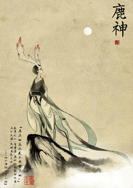
出自《山海经》原型是夫诸，白鹿而有四角， 看似温柔洁净，它一出现，其地必定是大水 时期。《山海经·中山经》：“中次三经萯山之 首，曰敖岸之山，其阳多王雩琈之玉，其阴多 赭、黄金。神熏池居之。是常出美玉。北望河 林，其状如蒨如举。有兽焉，其状如白鹿而四 角，名曰夫诸，见则其邑大水。” |
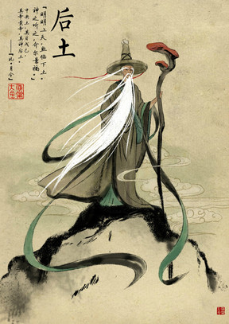
是共工的儿子，土地神，或者是土神。掌管土，他在大水淹过来的时候变出了一大块巨石挡住了大浪。 《山海经·海内经》：“共工生后土，后土生噎鸣，噎鸣生岁十有二。” |
|
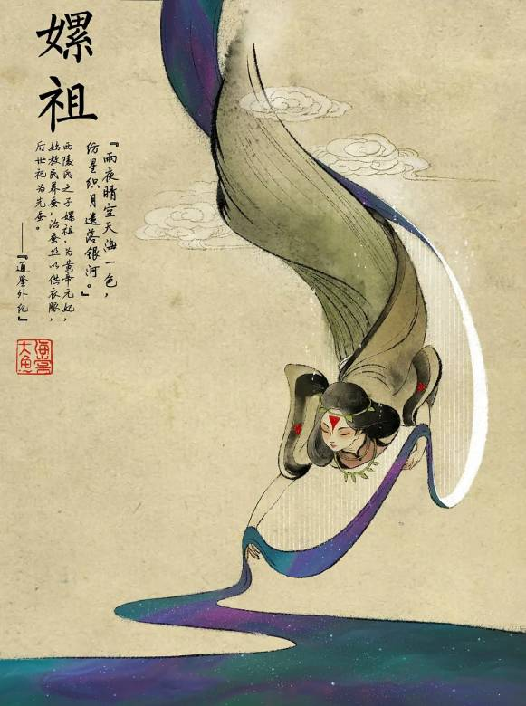
远古时期的人物，还是轩辕黄帝的元妃。 她发明了养蚕，史称嫘祖养蚕。嫘祖是 我们先祖杰出女性的代表，她首倡婚嫁， 母仪天下，福祉万民，和炎黄二帝开辟 鸿茫，被后人称为“先蚕”圣母，与炎帝， 黄帝生活在同一时代，同为人文始祖。 |
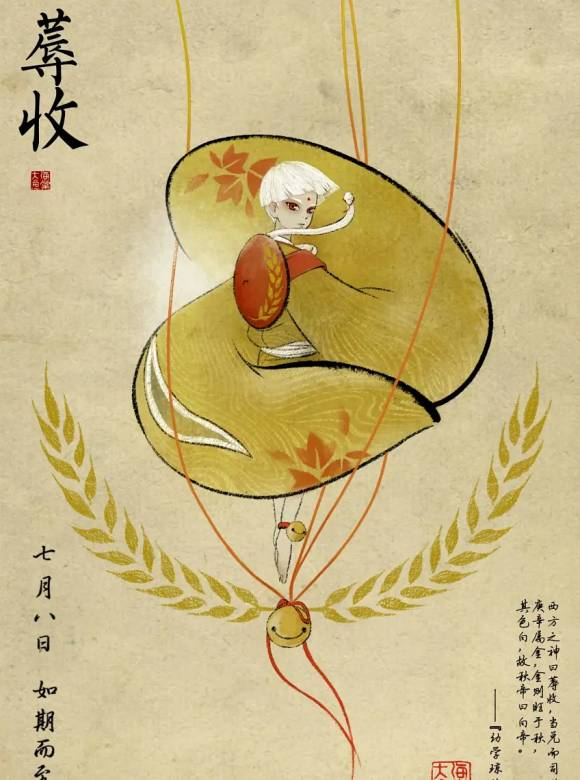
又名该，中国古代神话中的金神、秋神、西方之神、天之刑神，五行神之一。少昊之子及其辅佐神。 据《国语·晋语》记载，蓐收脸上长着白毛，有老虎一样的爪，手里拿着斧子。《山海经·海外西经》记载， 蓐收左耳上有条蛇，骑着两条龙。 |
|
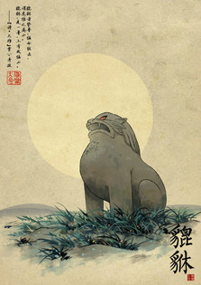
貔貅是中国古代神话传说中的一种神兽， 凶猛威武，它在天上负责巡视工作，阻 止妖魔鬼怪、瘟疫疾病扰乱天庭。传说 貔貅触犯天条，玉皇大帝罚他只以四面 八方之财为食，吞万物而不泻，可招财 聚宝，只进不出，神通特异。 |
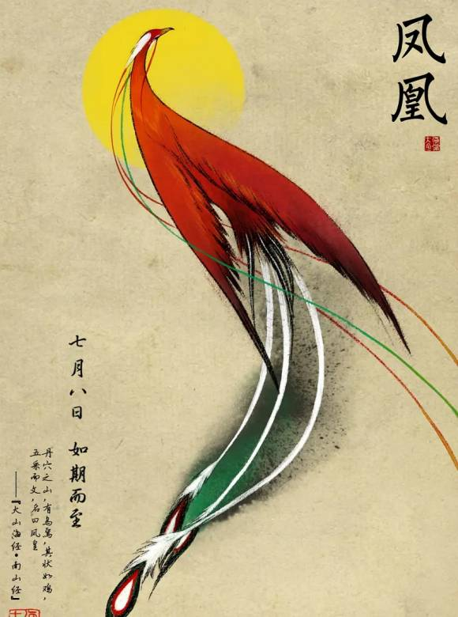
凤凰，又作“凤皇”，亦称凤鸟、丹鸟、火鸟、鶤鸡、威凤等，为中国古代神话传说中的一对鸟类神兽组合， 分有雌雄之别，雄为“凤”，雌为“凰”，合称为凤凰。据《山海经》记载，凤凰二鸟的形状像是普通的鸡， 全身上下都是五彩斑斓的羽毛。 大鱼海棠中掌管百鸟，死后化身为一只大凤凰，“迦楼罗”陪着椿的爷爷。 |
|
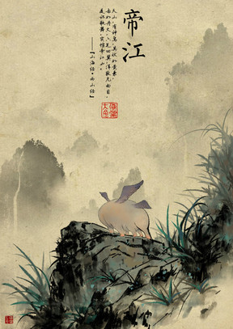
剧中椿按照貔貅的约定，在夜晚去找貔貅帮忙。湫跟在椿的身后，往山上去的时候，有几只长着翅膀， 还有些胖乎乎的东西被湫惊吓，匆忙跑进林子躲起来。这个胖家伙就是帝江。《山海经·西山次三经》 ：又西三百五十里曰天山……，有神鸟，其状如黄囊，赤如丹火，六足四翼，浑敦无面目，是识歌舞，实为帝江也。 |
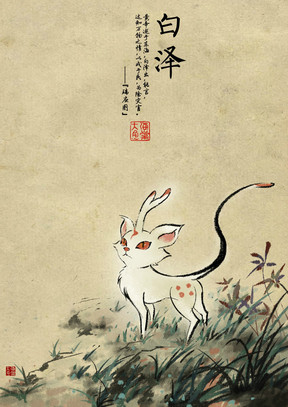
白泽是影片中椿养的小猫，传说中昆仑山上著名的神兽。它浑身雪白，有翼，能说人话，通万物之情。 它知道天下所有鬼怪的名字、形貌和驱除的方术，传说是钟馗的坐骑，所以从很早开始，就被当做驱鬼的神和祥瑞来供奉。 《元史》记载：白泽兽虎首朱发而有角，龙身。《明集礼》记载：白泽为龙首绿发戴角，四足为飞走状。 |